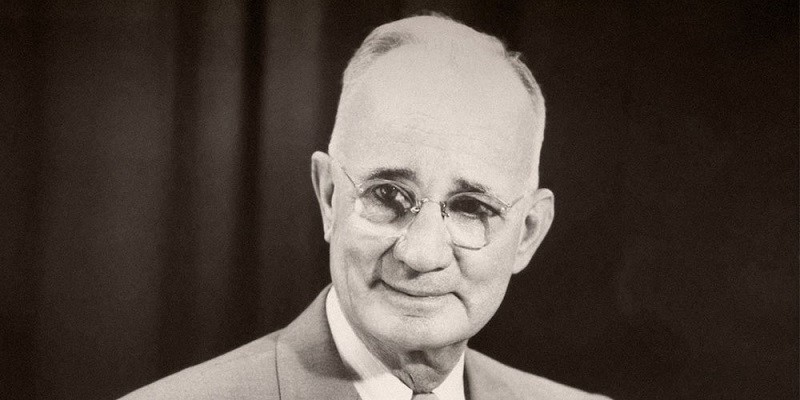
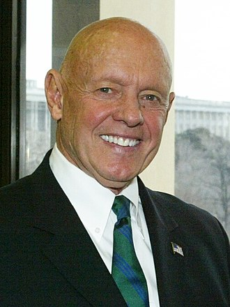
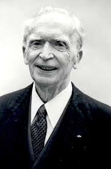
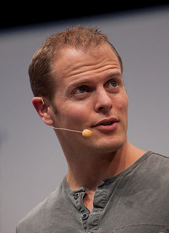
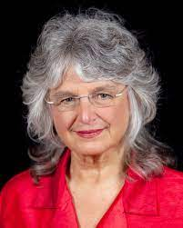

Books: Rich Dad Poor Dad, Cashflow-Quadrant, Rich Dads Guide to Investing

Robert Toru Kiyosaki (born April 8, 1947) is an American businessman and author. Kiyosaki is the founder of Rich Global LLC and the Rich Dad Company, a private financial education company that provides personal finance and business education to people through books and videos.The company's main revenues come from franchisees of the Rich Dad seminars that are conducted by independent individuals using Kiyosaki's brand name for a fee.[citation needed] He is also the creator of the Cashflow board and software games to educate adults and children about business and financial concepts.
Kiyosaki is the author of more than 26 books, including the international self-published personal finance Rich Dad Poor Dad series of books which has been translated into 51 languages and sold over 41 million copies worldwide. He has been criticized for advocating practices of debatable legality perceived as "get rich quick" philosophy.Kiyosaki is the subject of a class action suit filed by people who attended his seminars and has been the subject of two investigative documentaries by CBC Canada and WTAE USA. Kiyosaki's company, Rich Global LLC, filed for bankruptcy in 2012.
Books authored:
Rich Dad Poor Dad – What the Rich Teach Their Kids About Money – That the Poor and Middle Class Do Not! (first published in 1997) Warner Business Books.
Cashflow Quadrant: Rich Dad's Guide to Financial Freedom (2000).
Rich Dad's Guide to Investing: What the Rich Invest in, That the Poor and the Middle Class Do Not! (2000).
Book:Think and Grow Rich

Oliver Napoleon Hill (born October 26, 1883 – November 8, 1970) was an American self-help author. He is known best for his book Think and Grow Rich (1937) which is among the 10 best selling self-help books of all time.[1][2] Hill's works insisted that fervid expectations are essential to improving one's life.[3][4] Most of his books were promoted as expounding principles to achieve "success".
At the age of seventeen, Hill graduated from high school and moved to Tazewell, Virginia, to attend business school. In 1901, Hill accepted a job working for the lawyer Rufus A. Ayers, a coal magnate and former Virginia attorney general. Author Richard Lingeman wrote that Hill received this job after arranging to keep confidential the death of a black bellhop whom the previous manager of the mine had accidentally shot while drunk.[8]Hill left his coal mine management job soon afterwards and enrolled in law school before withdrawing due to lack of funds. Later in life, Hill would use the title of "Attorney of Law", although Hill's official biography notes that "there is no record of his having actually performed legal services for anyone."[11]
Works:
The Law of Success (1928)
The Magic Ladder to Success (1930)
Think and Grow Rich (1937)
Book:The 7 Habits of Highly Effective People

Stephen Richards Covey (October 24, 1932 – July 16, 2012) was an American educator, author, businessman, and keynote speaker. His most popular book is The 7 Habits of Highly Effective People.[1] His other books include First Things First, Principle-Centered Leadership, The 7 Habits of Highly Effective Families, The 8th Habit, and The Leader In Me — How Schools and Parents Around the World Are Inspiring Greatness, One Child at a Time. In 1996, Time magazine named him one of the 25 most influential people.[2] He was a professor at the Jon M. Huntsman School of Business at Utah State University at the time of his death.
Covey was heavily influenced by Peter Drucker and Carl Rogers. Another key influence on his thinking was his study of American self-help books that he did for his doctoral dissertation.[5] A further influence on Covey was his affiliation with The Church of Jesus Christ of Latter-day Saints. According to Clayton Christensen, The Seven Habits was a secular distillation of Latter-day Saint values.[6]
Works:
Spiritual Roots of Human Relations (1970)
How to Succeed withPeople"" (1971)
The Divine Center (1982)
The 7 Habits of Highly Effective People (1989, 2004)
Principle Centered Leadership (1989)
Book: Power of Your subconcious mind

Murphy was born in Ballydehob, County Cork, Ireland, the son of a private boys' school headmaster and raised a Roman Catholic. He joined the Jesuits. Murphy was enrolled in the National School and was encouraged to study for the priesthood and was accepted as a Jesuit seminarian. However, by the time he reached his late teen years, he began to question the Catholic orthodoxy of the Jesuits, and he withdrew from the seminary. His goal was to explore new ideas and gain new experiences—a goal he could not pursue in Catholic-dominated Ireland—he left his family to go to America.
urphy traveled to India and spent a lot of time with Indian sages, learning Hindu philosophy. He later on formed a new church in America with Hindu ideologies.In the mid-1940s, he moved to Los Angeles, where he met Religious Science founder Ernest Holmes, and was ordained into Religious Science by Holmes in 1946, thereafter teaching at Rochester, New York, and later at the Institute of Religious Science in Los Angeles. A meeting with Divine Science Assoiation president Erwin Gregg led to him being re ordained into Divine Science, and he became the minister of the Los Angeles Divine Science Church in 1949, which he built into one of the largest New Thought congregations in the country.
In the 1950s, Murphy married, earned a PhD in psychology from the University of Southern California and started writing.After his first wife died in 1976, he remarried to a fellow Divine Science minister who was his longstanding secretary. He moved his ministry to Laguna Hills, California, where he died in 1981. His wife, Dr. Jean Murphy, continued in this ministry for some years afterwards.
Book: The Power of Positive Thinking

Norman Vincent Peale (May 31, 1898 – December 24, 1993) was an American minister and author who is best known for his work in popularizing the concept of positive thinking, especially through his best-selling book The Power of Positive Thinking. He served as the pastor of Marble Collegiate Church, New York, from 1932 until 1984,[1] leading a Reformed Church in America congregation.
Peale and Smiley Blanton, a psychoanalyst, established a religio-psychiatric outpatient clinic next door to the church. The two men wrote books together, notably Faith Is the Answer: A Psychiatrist and a Pastor Discuss Your Problems (1940). The book was written in alternating chapters, with Blanton writing one chapter, then Peale. Blanton espoused no particular religious point of view in his chapters. In 1951 this clinic of psychotherapy and religion grew into the American Foundation of Religion and Psychiatry, with Peale serving as president and Blanton as executive director.[5] Blanton handled difficult psychiatric cases and Peale, who had no mental health credentials, handled religious issues.[6]
Work: The Positive Power of Jesus Christ (1980) ISBN 0-8423-4875-1
Stay Alive All Your Life (1957)
Why Some Positive Thinkers Get Powerful Results (1987). ISBN 0-449-21359-5
The Power of Positive Thinking, Ballantine Books; Reissue edition (August 1, 1996). ISBN 0-449-91147-0
Guide to Confident Living, Ballantine Books; Reissue edition (September 1, 1996). ISBN 0-449-91192-6
Six Attitudes for Winners, Tyndale House Publishers; (May 1, 1990). ISBN 0-8423-5906-0
Positive Thinking Every Day : An Inspiration for Each Day of the Year, Fireside Books; (December 6, 1993).
Book: The 4-Hour Work Week

Ferriss grew up in East Hampton, New York. Throughout childhood, Ferriss experienced poor health, sparking an interest in self-improvement. After graduating from St. Paul's School, Ferriss matriculated at Princeton University, earning a B.A. in East Asian studies in 2000.[3] His senior thesis was titled "Acquisition of Japanese Kanji: Conventional Practice and Mnemonic Supplementation", under the supervision of Seiichi Makino.[4][5][6] After graduating from Princeton, Ferriss worked in sales at a data storage company.[7]
In 2001, Ferriss founded BrainQUICKEN, an internet-based nutritional supplements business, while still employed at his prior job.[8] He sold the company, then known as BodyQUICK, to a London-based private equity firm in 2010.[9][10][11][12][13] He has stated that The 4-Hour Workweek was based on this period.[11] Since writing his books, he has reevaluated his ideas about productivity, saying "Not everything that is meaningful can be measured."[14][15]
Published works:
Ferriss, Timothy (2007). The 4-Hour Workweek: Escape 9-5, Live Anywhere, and Join the New Rich. New York: Crown Publishers. ISBN 978-0-307-35313-9.
Ferriss, Timothy (2009). The 4-Hour Workweek: Escape 9-5, Live Anywhere, and Join the New Rich (Expanded and Updated). New York: Crown Publishers. ISBN 978-0-307-46535-1.
Ferriss, Timothy (2010). The 4-Hour Body: An Uncommon Guide to Rapid Fat-Loss, Incredible Sex, and Becoming Superhuman. New York: Crown Archetype. ISBN 978-0307463630.
Ferriss, Timothy (2012). The 4-Hour Chef: The Simple Path to Cooking Like a Pro, Learning Anything, and Living the Good Life. New York: Houghton Mifflin Harcourt. ISBN 978-0-547-88459-2.
Ferriss, Timothy (2016). Tools of Titans: The Tactics, Routines, and Habits of Billionaires, Icons, and World-Class Performers. New York: Houghton Mifflin Harcourt. ISBN 978-1-328-68378-6.
Ferriss, Timothy (2017). Tribe of Mentors: Short Life Advice from the Best in the World. New York: Houghton Mifflin Harcourt. ISBN 978-1-328-99496-7.
Books: An entrepreneurial journey, Dream With Your Eyes Open

He has been named on Esquire's List of the 75 Most Influential People of the 21st Century[2] and ranked 78 among the 100 most influential people in the world on the Time 100 (compiled by Time Magazine, 2009).[3] He was also listed amongst 25 Asia’s Most Powerful people by Fortune Magazine.[4] Based in Mumbai, India, Ronnie pioneered Cable Television, built a Media and Entertainment conglomerate (UTV Software Communications) that partnered with News Corp, 20th Century Fox, The Walt Disney Company and Bloomberg and later in 2012, he divested the company to Disney for an enterprise value of US$1.4 billion.[5]
Screwvala was born in Bombay into a Parsi family. His father was an executive at the British firm J L Morrison and Smith & Nephew. Screwvala schooled and went to college in Mumbai at Cathedral and John Connon School and Sydenham College.[5] Screwvala had a keen interest in theatre while in school and acted in professional plays with Bombay theatre as a hobby. He played notable roles in Shakespeare’s Othello and Death of a Salesman.[12]
Screwvala is married to Zarina Mehta, his second marriage. Zarina has been a co-founder in the media company UTV they founded, and now is the co-Trustee of their Philanthropic foundation; The Swades Foundation.[13] They live in Breach Candy, South Mumbai.[14] His first wife, Manjula Nanavati and Screwvala have one daughter, Trishya Screwvala, who runs her own Not For Profit, The Lighthouse Project,[15] and who is married to sports commentator Suhail Chandhok.[16]
Book: I Will Teach you to be Rich

Ramit Singh Sethi is an American personal finance advisor and entrepreneur.[2] Sethi is the author of the 2009 New York Times Best Seller, I Will Teach You to Be Rich and founder of GrowthLab.com,[3] owner of IWillTeachYouToBeRich.com, and owner and a co-founder of PBworks, a commercial wiki website.[4]
He attended Bella Vista High School in Fair Oaks, CA,[citation needed]. In 2004, he graduated from Stanford University with a Bachelor of Arts (Information & Society) in Science, Technology & Society with a minor in Psychology.[7] In 2005 he received a Master of Arts in Sociology (Social Psychology and Interpersonal Processes), also from Stanford.[8]
In 2009, Sethi released I Will Teach You To Be Rich.[9] He re-released an updated version in 2019.Sethi also has a chapter giving advice in Tim Ferriss' book Tools of Titans.
Book: Your Money or Your Life

Vicki Robin (born July 6, 1945) is an American writer and speaker. She is best known as the author of Your Money Or Your Life: 9 Steps to Transforming Your Relationship with Money and Achieving Financial Independence.[2]
Brought about by a desire to pursue intentional living, Robin and Dominguez experimented with frugality and simple living and found it was possible to live on a fraction of the money spent by a typical household.[4] Furthermore, paid work could be avoided entirely with a modest nest egg providing the required income. They supported themselves financially by investing in long-term treasury bonds and using the interest payments to cover living expenses.[2] Without the need for a job, they spent their time supporting environmental and charitable causes. Those they worked with inevitably became curious about how the two managed financially.
Robin was born in Oklahoma, but grew up in Long Island, New York and attended Manhasset Secondary School, where she was a member of the Leaders Club and selected as "most likely to succeed" in the high school class of 1963.[3] She graduated from Brown University in 1967 and initially pursued a career as an actress, appearing as an extra in the soap operas Love of Life and The Secret Storm.[4] Robin quickly became disillusioned with the industry.